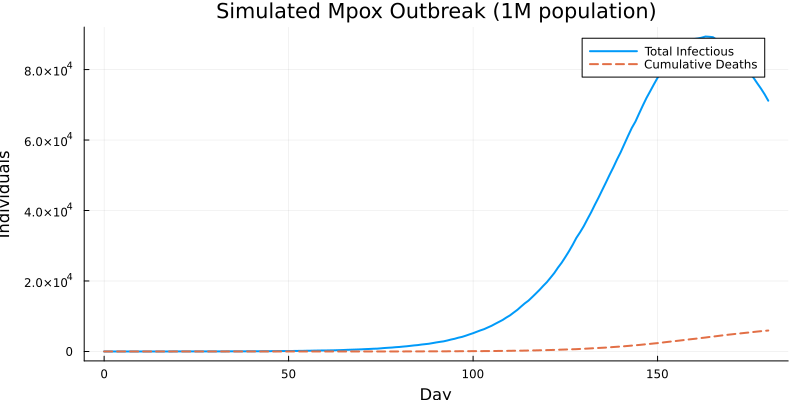
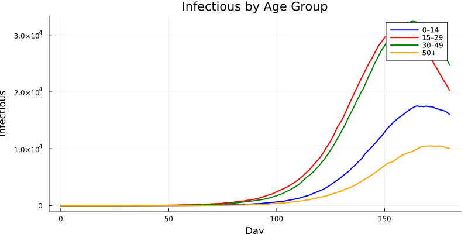
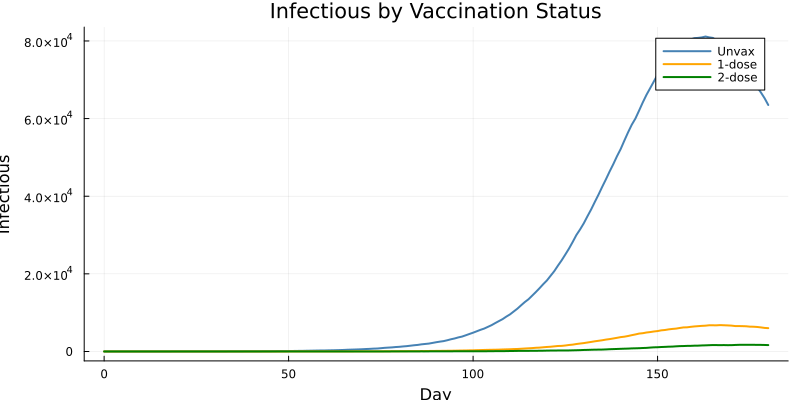
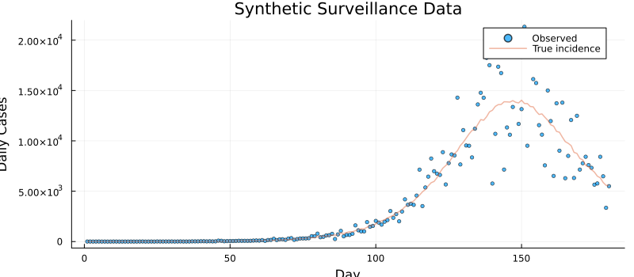
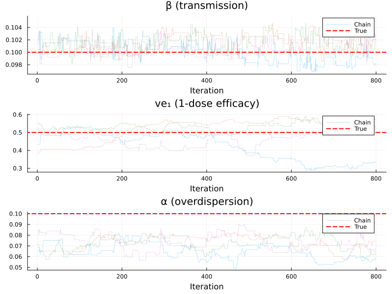
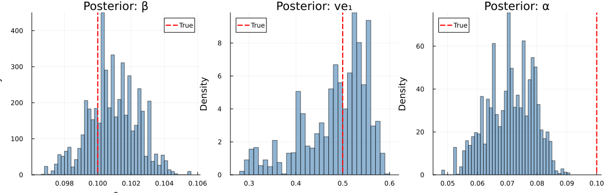
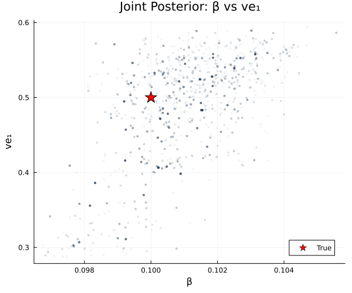
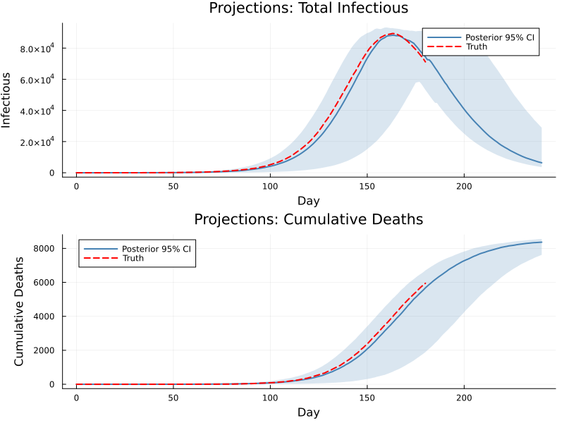

Mpox SEIR: Age-Structured Model with Vaccination
Introduction
Mpox (monkeypox) is a zoonotic orthopoxvirus that can spread through close person-to-person contact. The 2022–2024 global outbreak (clade IIb) and ongoing outbreaks of clade I in Central Africa highlighted the need for age-structured transmission models that capture heterogeneous contact patterns and partial vaccine protection.
This vignette builds a discrete-time stochastic SEIR model stratified by age group and vaccination status, inspired by the full mpoxseir package. The simplified teaching version retains the key structural features — age-dependent contact matrices, multi-dose vaccine efficacy, and negative-binomial observation noise — while remaining compact enough to understand end-to-end.
We demonstrate:
- Defining a 2D array model (age × vaccination) in the odin DSL
- Simulating an mpox outbreak with realistic demographics
- Generating synthetic surveillance data
- Fitting the model via particle filter + MCMC
- Recovering the transmission rate and vaccine efficacy from data
| Feature | Odin construct |
|---|---|
| Age structure (4 groups) | dim(S) = c(n_age, n_vax), 2D arrays |
| Contact matrix | dim(contact) = c(n_age, n_age), parameter array |
| Vaccination strata (3 levels) | ifelse() for stratum-specific efficacy |
| Competing-risks mortality | Sequential Binomial draws |
| NegBinomial observation model | ~ NegativeBinomial(size, prob) |
using Odin
using Distributions
using Plots
using Statistics
using LinearAlgebra: diagm
using RandomModel Definition
Compartments
For each of $a = 1, \ldots, 4$ age groups and $v = 1, 2, 3$ vaccination strata (unvaccinated, 1-dose, 2-dose):
\[S_{a,v}\]
— Susceptible\[E_{a,v}\]
— Exposed (latent, not yet infectious)\[I_{a,v}\]
— Infectious (with rash)\[R_{a,v}\]
— Recovered (immune)\[D_{a,v}\]
— Dead (cumulative)\[\text{cases\_inc}_{a,v}\]
— Incident cases (reset every day)
Force of infection
\[\lambda_a = \beta \sum_{a'} \frac{C_{a,a'} \, I^{\text{tot}}_{a'}}{N_{a'}}\]
where $C$ is the contact matrix, $I^{\text{tot}}_a = \sum_v I_{a,v}$, and $N_a$ is the total population in age group $a$. Vaccination reduces susceptibility: the infection probability for stratum $v$ is
\[p^{SE}_{a,v} = 1 - \exp\!\bigl(-\lambda_a \,(1 - \text{ve}_v)\, \Delta t\bigr)\]
with $\text{ve}_1 = 0$ (unvaccinated), $\text{ve}_2 = \text{ve1}$ (1-dose), $\text{ve}_3 = \text{ve2}$ (2-dose).
Competing risks: recovery vs death
From the infectious compartment, individuals can recover or die. We draw sequentially to handle the competing risk:
\[n^{IR}_{a,v} \sim \text{Bin}\bigl(I_{a,v},\; p^{IR}\bigr), \qquad n^{ID}_{a,v} \sim \text{Bin}\!\left(I_{a,v} - n^{IR}_{a,v},\; \frac{p^{ID}}{1 - p^{IR}}\right)\]
where $p^{IR} = 1 - e^{-\gamma(1-\mu)\Delta t}$ and $p^{ID} = 1 - e^{-\gamma\mu\Delta t}$.
mpox_seir = @odin begin
# === Configuration ===
n_age = parameter(4)
n_vax = parameter(3)
# === Dimensions ===
dim(S) = c(n_age, n_vax)
dim(E) = c(n_age, n_vax)
dim(I) = c(n_age, n_vax)
dim(R) = c(n_age, n_vax)
dim(D) = c(n_age, n_vax)
dim(cases_inc) = c(n_age, n_vax)
dim(n_SE) = c(n_age, n_vax)
dim(n_EI) = c(n_age, n_vax)
dim(n_IR) = c(n_age, n_vax)
dim(n_ID) = c(n_age, n_vax)
dim(p_SE) = c(n_age, n_vax)
dim(contact) = c(n_age, n_age)
dim(N0) = n_age
dim(S0) = c(n_age, n_vax)
dim(I0) = c(n_age, n_vax)
dim(lambda) = n_age
dim(ve) = n_vax
dim(I_age) = n_age
dim(weighted_inf) = c(n_age, n_age)
# === Vaccine efficacy by stratum ===
ve[j] = ifelse(j == 1, 0.0, ifelse(j == 2, ve1, ve2))
# === Force of infection ===
I_age[i] = sum(j, I[i, j])
weighted_inf[i, j] = contact[i, j] * I_age[j] / N0[j]
lambda[i] = beta * sum(j, weighted_inf[i, j])
# === Transition probabilities ===
p_SE[i, j] = 1 - exp(-lambda[i] * (1 - ve[j]) * dt)
p_EI = 1 - exp(-sigma * dt)
p_IR = 1 - exp(-gamma * (1 - mu) * dt)
p_ID = 1 - exp(-gamma * mu * dt)
# === Stochastic transitions (Binomial draws) ===
n_SE[i, j] = Binomial(S[i, j], p_SE[i, j])
n_EI[i, j] = Binomial(E[i, j], p_EI)
n_IR[i, j] = Binomial(I[i, j], p_IR)
n_ID[i, j] = Binomial(I[i, j] - n_IR[i, j], p_ID / (1 - p_IR))
# === State updates ===
update(S[i, j]) = S[i, j] - n_SE[i, j]
update(E[i, j]) = E[i, j] + n_SE[i, j] - n_EI[i, j]
update(I[i, j]) = I[i, j] + n_EI[i, j] - n_IR[i, j] - n_ID[i, j]
update(R[i, j]) = R[i, j] + n_IR[i, j]
update(D[i, j]) = D[i, j] + n_ID[i, j]
update(cases_inc[i, j]) = cases_inc[i, j] + n_SE[i, j]
# === Initial conditions ===
initial(S[i, j]) = S0[i, j]
initial(E[i, j]) = 0
initial(I[i, j]) = I0[i, j]
initial(R[i, j]) = 0
initial(D[i, j]) = 0
initial(cases_inc[i, j], zero_every = 1) = 0
# === Outputs (appended after state variables) ===
output(total_I) = sum(I)
output(total_cases_inc) = sum(cases_inc)
output(total_D) = sum(D)
# === Data comparison ===
total_cases = sum(cases_inc)
cases_data = data()
nb_size = 1 / alpha_cases
nb_prob = nb_size / (nb_size + max(total_cases, 1e-6))
cases_data ~ NegativeBinomial(nb_size, nb_prob)
# === Parameters ===
contact = parameter()
N0 = parameter()
S0 = parameter()
I0 = parameter()
beta = parameter(0.1)
sigma = parameter(0.1)
gamma = parameter(0.14)
mu = parameter(0.01)
ve1 = parameter(0.5)
ve2 = parameter(0.85)
alpha_cases = parameter(0.1)
endOdin.DustSystemGenerator{var"##OdinModel#277"}(var"##OdinModel#277"(0, [:S, :E, :I, :R, :D, :cases_inc], [:n_age, :n_vax, :contact, :N0, :S0, :I0, :beta, :sigma, :gamma, :mu, :ve1, :ve2, :alpha_cases], false, false, true, true, false, Dict{Symbol, Array}()))Parameter Setup
Demographics and contact matrix
We use four age groups — children (0–14), young adults (15–29), adults (30–49), and older adults (50+) — with a symmetric contact matrix reflecting higher within-group mixing for the working-age population:
n_age = 4
n_vax = 3
N0 = [200_000.0, 300_000.0, 350_000.0, 150_000.0] # total 1M
contact = [2.0 0.5 0.3 0.1;
0.5 3.0 1.0 0.3;
0.3 1.0 2.5 0.5;
0.1 0.3 0.5 1.5]
age_labels = ["0–14", "15–29", "30–49", "50+"]
vax_labels = ["Unvax", "1-dose", "2-dose"]3-element Vector{String}:
"Unvax"
"1-dose"
"2-dose"Vaccination coverage
We assume some pre-existing vaccination — primarily in the 15–49 age groups who were targeted during prior outbreak response:
vax1_frac = [0.00, 0.10, 0.15, 0.05] # 1-dose coverage by age
vax2_frac = [0.00, 0.05, 0.10, 0.03] # 2-dose coverage by age
S0 = zeros(n_age, n_vax)
I0 = zeros(n_age, n_vax)
for i in 1:n_age
S0[i, 2] = round(N0[i] * vax1_frac[i])
S0[i, 3] = round(N0[i] * vax2_frac[i])
S0[i, 1] = N0[i] - S0[i, 2] - S0[i, 3]
end
# Seed 5 infections in age group 2 (15–29), unvaccinated
I0[2, 1] = 5.0
S0[2, 1] -= 5.0
println("Initial susceptibles by [age, vax]:")
display(S0)
println("\nTotal vaccinated (1-dose): ", sum(S0[:, 2]))
println("Total vaccinated (2-dose): ", sum(S0[:, 3]))Initial susceptibles by [age, vax]:
Total vaccinated (1-dose): 90000.0
Total vaccinated (2-dose): 54500.0
4×3 Matrix{Float64}:
200000.0 0.0 0.0
254995.0 30000.0 15000.0
262500.0 52500.0 35000.0
138000.0 7500.0 4500.0True parameters
true_pars = (
n_age = Float64(n_age),
n_vax = Float64(n_vax),
contact = contact,
N0 = N0,
S0 = S0,
I0 = I0,
beta = 0.1,
sigma = 0.1, # 10-day mean latent period
gamma = 0.14, # ~7-day mean infectious period
mu = 0.01, # 1% infection fatality rate
ve1 = 0.5, # 1-dose vaccine efficacy
ve2 = 0.85, # 2-dose vaccine efficacy
alpha_cases = 0.1, # NegBin overdispersion
)(n_age = 4.0, n_vax = 3.0, contact = [2.0 0.5 0.3 0.1; 0.5 3.0 1.0 0.3; 0.3 1.0 2.5 0.5; 0.1 0.3 0.5 1.5], N0 = [200000.0, 300000.0, 350000.0, 150000.0], S0 = [200000.0 0.0 0.0; 254995.0 30000.0 15000.0; 262500.0 52500.0 35000.0; 138000.0 7500.0 4500.0], I0 = [0.0 0.0 0.0; 5.0 0.0 0.0; 0.0 0.0 0.0; 0.0 0.0 0.0], beta = 0.1, sigma = 0.1, gamma = 0.14, mu = 0.01, ve1 = 0.5, ve2 = 0.85, alpha_cases = 0.1)Simulate an Outbreak
sim_times = collect(0.0:1.0:180.0)
sim_result = simulate(mpox_seir, true_pars;
times=sim_times, dt=0.25, seed=42, n_particles=1)
println("Result shape: ", size(sim_result),
" (n_state+n_output × n_particles × n_times)")Result shape: (75, 1, 181) (n_state+n_output × n_particles × n_times)The state layout with c(4, 3) arrays in column-major order is: S (rows 1–12), E (13–24), I (25–36), R (37–48), D (49–60), casesinc (61–72), then 3 output rows (totalI, totalcasesinc, total_D).
ns = n_age * n_vax # 12 elements per compartment
out_offset = 6 * ns # outputs start after 6 compartments × 12 elements
total_I = sim_result[out_offset + 1, 1, :]
total_cases = sim_result[out_offset + 2, 1, :]
total_D = sim_result[out_offset + 3, 1, :]181-element Vector{Float64}:
0.0
0.0
0.0
0.0
0.0
0.0
0.0
0.0
0.0
0.0
⋮
5087.0
5197.0
5307.0
5411.0
5534.0
5649.0
5756.0
5850.0
5945.0Epidemic curves
p_epi = plot(sim_times, total_I, lw=2, label="Total Infectious",
xlabel="Day", ylabel="Individuals",
title="Simulated Mpox Outbreak (1M population)",
legend=:topright, size=(800, 400))
plot!(p_epi, sim_times, total_D, lw=2, ls=:dash, label="Cumulative Deaths")
p_epi
Infectious by age group
I_offset = 2 * ns # I starts after S (12) and E (12)
colors = [:blue, :red, :green, :orange]
p_age = plot(title="Infectious by Age Group",
xlabel="Day", ylabel="Infectious",
legend=:topright, size=(800, 400))
for a in 1:n_age
# Sum across vaccination strata: I[a,1] + I[a,2] + I[a,3]
I_a = sim_result[I_offset + a, 1, :] .+
sim_result[I_offset + n_age + a, 1, :] .+
sim_result[I_offset + 2*n_age + a, 1, :]
plot!(p_age, sim_times, I_a, lw=2, color=colors[a],
label=age_labels[a])
end
p_age
Infectious by vaccination status
p_vax = plot(title="Infectious by Vaccination Status",
xlabel="Day", ylabel="Infectious",
legend=:topright, size=(800, 400))
vax_colors = [:steelblue, :orange, :green]
for v in 1:n_vax
I_v = zeros(length(sim_times))
for a in 1:n_age
I_v .+= sim_result[I_offset + (v-1)*n_age + a, 1, :]
end
plot!(p_vax, sim_times, I_v, lw=2, color=vax_colors[v],
label=vax_labels[v])
end
p_vax
Generate Synthetic Data
We extract the daily incidence (aggregated over all age and vaccination strata) and add negative-binomial observation noise to create realistic surveillance data:
Random.seed!(42)
obs_times = sim_times[2:end] # days 1, 2, ..., 180
true_cases = total_cases[2:end] # daily incidence from simulation
# Add NegBinomial observation noise
alpha_true = true_pars.alpha_cases
function rnegbin(mu, alpha)
size_param = 1 / alpha
p = size_param / (size_param + max(mu, 1e-10))
rand(NegativeBinomial(size_param, p))
end
obs_cases = [rnegbin(c, alpha_true) for c in true_cases]
p_data = plot(xlabel="Day", ylabel="Daily Cases",
title="Synthetic Surveillance Data",
size=(800, 350), legend=:topright)
scatter!(p_data, obs_times, obs_cases, ms=2.5, alpha=0.7, label="Observed")
plot!(p_data, obs_times, true_cases, lw=1.5, alpha=0.5, label="True incidence")
p_data
Prepare filter data
filter_data = ObservedData([
(time=Float64(t), cases_data=Float64(c))
for (t, c) in zip(obs_times, obs_cases)
])Odin.FilterData{@NamedTuple{cases_data::Float64}}([1.0, 2.0, 3.0, 4.0, 5.0, 6.0, 7.0, 8.0, 9.0, 10.0 … 171.0, 172.0, 173.0, 174.0, 175.0, 176.0, 177.0, 178.0, 179.0, 180.0], [(cases_data = 4.0,), (cases_data = 5.0,), (cases_data = 2.0,), (cases_data = 4.0,), (cases_data = 7.0,), (cases_data = 1.0,), (cases_data = 2.0,), (cases_data = 0.0,), (cases_data = 0.0,), (cases_data = 6.0,) … (cases_data = 7776.0,), (cases_data = 8420.0,), (cases_data = 7596.0,), (cases_data = 7323.0,), (cases_data = 5647.0,), (cases_data = 5768.0,), (cases_data = 8418.0,), (cases_data = 6481.0,), (cases_data = 3351.0,), (cases_data = 5501.0,)])Inference Setup
Particle filter
We use a bootstrap particle filter with 200 particles to estimate the likelihood of the observed daily case counts given the stochastic model:
filter = Likelihood(mpox_seir, filter_data;
n_particles=100, dt=0.25, seed=42)Likelihood{DustFilter}(DustFilter{var"##OdinModel#277", Float64, @NamedTuple{cases_data::Float64}}(Odin.DustSystemGenerator{var"##OdinModel#277"}(var"##OdinModel#277"(0, [:S, :E, :I, :R, :D, :cases_inc], [:n_age, :n_vax, :contact, :N0, :S0, :I0, :beta, :sigma, :gamma, :mu, :ve1, :ve2, :alpha_cases], false, false, true, true, false, Dict{Symbol, Array}(:lambda => [0.022329033333333335, 0.03362130000000001, 0.030420166666666665, 0.0164902], :n_SE => [335.0 0.0 0.0; 235.0 42.0 12.0; 319.0 73.0 36.0; 266.0 10.0 7.0], :I_age => [16110.0, 20447.0, 24962.0, 10074.0], :n_IR => [536.0 0.0 0.0; 615.0 66.0 9.0; 720.0 110.0 29.0; 317.0 16.0 2.0], :weighted_inf => [0.1611 0.034078333333333335 0.021396 0.006716000000000001; 0.040275 0.20447 0.07132 0.020148; 0.024165 0.06815666666666667 0.1783 0.03358; 0.008055 0.020447 0.03566 0.10074], :p_SE => [0.005566706480892636 0.0027872375871298427 0.0008369882797364392; 0.008370099020183486 0.004193843672466335 0.0012600042771812037; 0.007576196506490884 0.0037953004058306483 0.0011401058349342907; 0.004114063956133895 0.0020591520316115552 0.000618191340946983], :n_ID => [5.0 0.0 0.0; 4.0 2.0 1.0; 6.0 6.0 0.0; 2.0 0.0 0.0], :ve => [0.0, 0.5, 0.85], :n_EI => [461.0 0.0 0.0; 468.0 56.0 14.0; 529.0 122.0 34.0; 310.0 10.0 1.0]))), Odin.FilterData{@NamedTuple{cases_data::Float64}}([1.0, 2.0, 3.0, 4.0, 5.0, 6.0, 7.0, 8.0, 9.0, 10.0 … 171.0, 172.0, 173.0, 174.0, 175.0, 176.0, 177.0, 178.0, 179.0, 180.0], [(cases_data = 4.0,), (cases_data = 5.0,), (cases_data = 2.0,), (cases_data = 4.0,), (cases_data = 7.0,), (cases_data = 1.0,), (cases_data = 2.0,), (cases_data = 0.0,), (cases_data = 0.0,), (cases_data = 6.0,) … (cases_data = 7776.0,), (cases_data = 8420.0,), (cases_data = 7596.0,), (cases_data = 7323.0,), (cases_data = 5647.0,), (cases_data = 5768.0,), (cases_data = 8418.0,), (cases_data = 6481.0,), (cases_data = 3351.0,), (cases_data = 5501.0,)]), 0.0, 100, 0.25, 42, false, nothing))Parameter packer
We fit three parameters — $\beta$ (transmission rate), ve1 (1-dose vaccine efficacy), and $\alpha_{\text{cases}}$ (overdispersion) — keeping all others fixed at their true values:
packer = Packer([:beta, :ve1, :alpha_cases];
fixed=(
n_age = Float64(n_age),
n_vax = Float64(n_vax),
contact = contact,
N0 = N0,
S0 = S0,
I0 = I0,
sigma = 0.1,
gamma = 0.14,
mu = 0.01,
ve2 = 0.85,
))
likelihood = as_model(filter, packer)MontyModel{Odin.var"#dust_likelihood_monty##0#dust_likelihood_monty##1"{DustFilter{var"##OdinModel#277", Float64, @NamedTuple{cases_data::Float64}}, MontyPacker}, Nothing, Nothing, Nothing}(["beta", "ve1", "alpha_cases"], Odin.var"#dust_likelihood_monty##0#dust_likelihood_monty##1"{DustFilter{var"##OdinModel#277", Float64, @NamedTuple{cases_data::Float64}}, MontyPacker}(DustFilter{var"##OdinModel#277", Float64, @NamedTuple{cases_data::Float64}}(Odin.DustSystemGenerator{var"##OdinModel#277"}(var"##OdinModel#277"(0, [:S, :E, :I, :R, :D, :cases_inc], [:n_age, :n_vax, :contact, :N0, :S0, :I0, :beta, :sigma, :gamma, :mu, :ve1, :ve2, :alpha_cases], false, false, true, true, false, Dict{Symbol, Array}(:lambda => [0.022329033333333335, 0.03362130000000001, 0.030420166666666665, 0.0164902], :n_SE => [335.0 0.0 0.0; 235.0 42.0 12.0; 319.0 73.0 36.0; 266.0 10.0 7.0], :I_age => [16110.0, 20447.0, 24962.0, 10074.0], :n_IR => [536.0 0.0 0.0; 615.0 66.0 9.0; 720.0 110.0 29.0; 317.0 16.0 2.0], :weighted_inf => [0.1611 0.034078333333333335 0.021396 0.006716000000000001; 0.040275 0.20447 0.07132 0.020148; 0.024165 0.06815666666666667 0.1783 0.03358; 0.008055 0.020447 0.03566 0.10074], :p_SE => [0.005566706480892636 0.0027872375871298427 0.0008369882797364392; 0.008370099020183486 0.004193843672466335 0.0012600042771812037; 0.007576196506490884 0.0037953004058306483 0.0011401058349342907; 0.004114063956133895 0.0020591520316115552 0.000618191340946983], :n_ID => [5.0 0.0 0.0; 4.0 2.0 1.0; 6.0 6.0 0.0; 2.0 0.0 0.0], :ve => [0.0, 0.5, 0.85], :n_EI => [461.0 0.0 0.0; 468.0 56.0 14.0; 529.0 122.0 34.0; 310.0 10.0 1.0]))), Odin.FilterData{@NamedTuple{cases_data::Float64}}([1.0, 2.0, 3.0, 4.0, 5.0, 6.0, 7.0, 8.0, 9.0, 10.0 … 171.0, 172.0, 173.0, 174.0, 175.0, 176.0, 177.0, 178.0, 179.0, 180.0], [(cases_data = 4.0,), (cases_data = 5.0,), (cases_data = 2.0,), (cases_data = 4.0,), (cases_data = 7.0,), (cases_data = 1.0,), (cases_data = 2.0,), (cases_data = 0.0,), (cases_data = 0.0,), (cases_data = 6.0,) … (cases_data = 7776.0,), (cases_data = 8420.0,), (cases_data = 7596.0,), (cases_data = 7323.0,), (cases_data = 5647.0,), (cases_data = 5768.0,), (cases_data = 8418.0,), (cases_data = 6481.0,), (cases_data = 3351.0,), (cases_data = 5501.0,)]), 0.0, 100, 0.25, 42, false, nothing), MontyPacker([:beta, :ve1, :alpha_cases], [:beta, :ve1, :alpha_cases], Symbol[], Dict{Symbol, Tuple}(), Dict{Symbol, UnitRange{Int64}}(:beta => 1:1, :ve1 => 2:2, :alpha_cases => 3:3), 3, (n_age = 4.0, n_vax = 3.0, contact = [2.0 0.5 0.3 0.1; 0.5 3.0 1.0 0.3; 0.3 1.0 2.5 0.5; 0.1 0.3 0.5 1.5], N0 = [200000.0, 300000.0, 350000.0, 150000.0], S0 = [200000.0 0.0 0.0; 254995.0 30000.0 15000.0; 262500.0 52500.0 35000.0; 138000.0 7500.0 4500.0], I0 = [0.0 0.0 0.0; 5.0 0.0 0.0; 0.0 0.0 0.0; 0.0 0.0 0.0], sigma = 0.1, gamma = 0.14, mu = 0.01, ve2 = 0.85), nothing)), nothing, nothing, nothing, Odin.MontyModelProperties(false, false, true, false))Evaluate at truth
ll_true = likelihood([true_pars.beta, true_pars.ve1, true_pars.alpha_cases])
println("Log-likelihood at true parameters: ", round(ll_true, digits=2))Log-likelihood at true parameters: -1171.44Priors
prior = @prior begin
beta ~ Gamma(2.0, 0.05) # mean 0.1, moderate uncertainty
ve1 ~ Beta(5.0, 5.0) # mean 0.5, concentrated on [0.2, 0.8]
alpha_cases ~ Exponential(0.1) # mean 0.1
end
posterior = likelihood + priorMontyModel{Odin.var"#monty_model_combine##0#monty_model_combine##1"{MontyModel{Odin.var"#dust_likelihood_monty##0#dust_likelihood_monty##1"{DustFilter{var"##OdinModel#277", Float64, @NamedTuple{cases_data::Float64}}, MontyPacker}, Nothing, Nothing, Nothing}, MontyModel{var"#10#11", var"#12#13"{var"#10#11"}, var"#14#15", Matrix{Float64}}}, Odin.var"#monty_model_combine##4#monty_model_combine##5"{Odin.var"#monty_model_combine##0#monty_model_combine##1"{MontyModel{Odin.var"#dust_likelihood_monty##0#dust_likelihood_monty##1"{DustFilter{var"##OdinModel#277", Float64, @NamedTuple{cases_data::Float64}}, MontyPacker}, Nothing, Nothing, Nothing}, MontyModel{var"#10#11", var"#12#13"{var"#10#11"}, var"#14#15", Matrix{Float64}}}}, Nothing, Matrix{Float64}}(["beta", "ve1", "alpha_cases"], Odin.var"#monty_model_combine##0#monty_model_combine##1"{MontyModel{Odin.var"#dust_likelihood_monty##0#dust_likelihood_monty##1"{DustFilter{var"##OdinModel#277", Float64, @NamedTuple{cases_data::Float64}}, MontyPacker}, Nothing, Nothing, Nothing}, MontyModel{var"#10#11", var"#12#13"{var"#10#11"}, var"#14#15", Matrix{Float64}}}(MontyModel{Odin.var"#dust_likelihood_monty##0#dust_likelihood_monty##1"{DustFilter{var"##OdinModel#277", Float64, @NamedTuple{cases_data::Float64}}, MontyPacker}, Nothing, Nothing, Nothing}(["beta", "ve1", "alpha_cases"], Odin.var"#dust_likelihood_monty##0#dust_likelihood_monty##1"{DustFilter{var"##OdinModel#277", Float64, @NamedTuple{cases_data::Float64}}, MontyPacker}(DustFilter{var"##OdinModel#277", Float64, @NamedTuple{cases_data::Float64}}(Odin.DustSystemGenerator{var"##OdinModel#277"}(var"##OdinModel#277"(0, [:S, :E, :I, :R, :D, :cases_inc], [:n_age, :n_vax, :contact, :N0, :S0, :I0, :beta, :sigma, :gamma, :mu, :ve1, :ve2, :alpha_cases], false, false, true, true, false, Dict{Symbol, Array}(:lambda => [0.02195899047619048, 0.03345550714285714, 0.030350759523809525, 0.01641807857142857], :n_SE => [354.0 0.0 0.0; 241.0 41.0 19.0; 304.0 64.0 21.0; 260.0 16.0 2.0], :I_age => [15753.0, 20370.0, 25000.0, 10022.0], :n_IR => [545.0 0.0 0.0; 584.0 80.0 22.0; 665.0 124.0 39.0; 306.0 17.0 4.0], :weighted_inf => [0.15753 0.03395 0.02142857142857143 0.006681333333333333; 0.0393825 0.2037 0.07142857142857142 0.020044; 0.023629499999999998 0.0679 0.17857142857142858 0.03340666666666667; 0.007876500000000002 0.02037 0.03571428571428571 0.10022], :p_SE => [0.005474706491172876 0.0027411100878432793 0.000823123190951236; 0.0083289968797563 0.004173206265143836 0.001253794859474744; 0.007558976031912357 0.0037866574031003575 0.0011375060311246132; 0.004096107615154332 0.0020501553761103075 0.00061548845565218], :n_ID => [6.0 0.0 0.0; 3.0 1.0 1.0; 9.0 1.0 1.0; 3.0 0.0 0.0], :ve => [0.0, 0.5, 0.85], :n_EI => [474.0 0.0 0.0; 443.0 66.0 11.0; 532.0 110.0 32.0; 319.0 13.0 3.0]))), Odin.FilterData{@NamedTuple{cases_data::Float64}}([1.0, 2.0, 3.0, 4.0, 5.0, 6.0, 7.0, 8.0, 9.0, 10.0 … 171.0, 172.0, 173.0, 174.0, 175.0, 176.0, 177.0, 178.0, 179.0, 180.0], [(cases_data = 4.0,), (cases_data = 5.0,), (cases_data = 2.0,), (cases_data = 4.0,), (cases_data = 7.0,), (cases_data = 1.0,), (cases_data = 2.0,), (cases_data = 0.0,), (cases_data = 0.0,), (cases_data = 6.0,) … (cases_data = 7776.0,), (cases_data = 8420.0,), (cases_data = 7596.0,), (cases_data = 7323.0,), (cases_data = 5647.0,), (cases_data = 5768.0,), (cases_data = 8418.0,), (cases_data = 6481.0,), (cases_data = 3351.0,), (cases_data = 5501.0,)]), 0.0, 100, 0.25, 42, false, DustSystem{var"##OdinModel#277", Float64, @NamedTuple{beta::Float64, ve1::Float64, alpha_cases::Float64, n_age::Float64, n_vax::Float64, contact::Matrix{Float64}, N0::Vector{Float64}, S0::Matrix{Float64}, I0::Matrix{Float64}, sigma::Float64, gamma::Float64, mu::Float64, ve2::Float64, dt::Float64}}(Odin.DustSystemGenerator{var"##OdinModel#277"}(var"##OdinModel#277"(0, [:S, :E, :I, :R, :D, :cases_inc], [:n_age, :n_vax, :contact, :N0, :S0, :I0, :beta, :sigma, :gamma, :mu, :ve1, :ve2, :alpha_cases], false, false, true, true, false, Dict{Symbol, Array}(:lambda => [0.02195899047619048, 0.03345550714285714, 0.030350759523809525, 0.01641807857142857], :n_SE => [354.0 0.0 0.0; 241.0 41.0 19.0; 304.0 64.0 21.0; 260.0 16.0 2.0], :I_age => [15753.0, 20370.0, 25000.0, 10022.0], :n_IR => [545.0 0.0 0.0; 584.0 80.0 22.0; 665.0 124.0 39.0; 306.0 17.0 4.0], :weighted_inf => [0.15753 0.03395 0.02142857142857143 0.006681333333333333; 0.0393825 0.2037 0.07142857142857142 0.020044; 0.023629499999999998 0.0679 0.17857142857142858 0.03340666666666667; 0.007876500000000002 0.02037 0.03571428571428571 0.10022], :p_SE => [0.005474706491172876 0.0027411100878432793 0.000823123190951236; 0.0083289968797563 0.004173206265143836 0.001253794859474744; 0.007558976031912357 0.0037866574031003575 0.0011375060311246132; 0.004096107615154332 0.0020501553761103075 0.00061548845565218], :n_ID => [6.0 0.0 0.0; 3.0 1.0 1.0; 9.0 1.0 1.0; 3.0 0.0 0.0], :ve => [0.0, 0.5, 0.85], :n_EI => [474.0 0.0 0.0; 443.0 66.0 11.0; 532.0 110.0 32.0; 319.0 13.0 3.0]))), [61878.0 61794.0 … 64713.0 63394.0; 25918.0 26426.0 … 28067.0 27677.0; … ; 109.0 119.0 … 110.0 128.0; 10.0 11.0 … 17.0 8.0], (beta = 0.1, ve1 = 0.5, alpha_cases = 0.1, n_age = 4.0, n_vax = 3.0, contact = [2.0 0.5 0.3 0.1; 0.5 3.0 1.0 0.3; 0.3 1.0 2.5 0.5; 0.1 0.3 0.5 1.5], N0 = [200000.0, 300000.0, 350000.0, 150000.0], S0 = [200000.0 0.0 0.0; 254995.0 30000.0 15000.0; 262500.0 52500.0 35000.0; 138000.0 7500.0 4500.0], I0 = [0.0 0.0 0.0; 5.0 0.0 0.0; 0.0 0.0 0.0; 0.0 0.0 0.0], sigma = 0.1, gamma = 0.14, mu = 0.01, ve2 = 0.85, dt = 0.25), 180.0, 0.25, 100, 72, 3, Xoshiro[Xoshiro(0x586d0290c2a3deae, 0xf3543dedc703bebe, 0x40afcddef0333158, 0x74a00b8723465ea2, 0x946aaf42c6e9390a), Xoshiro(0x8b3f839b100dcc86, 0xafa9f140ff616179, 0x2a26ad7d8eb1f6a4, 0x9a1b6820faff26ef, 0x13a14f6b238748d5), Xoshiro(0xda416669ede3590f, 0x915f4d0ebd536803, 0x5a96ad6fd73fc7fb, 0xb63e3371a8e7c210, 0x6c9c519d563cbac0), Xoshiro(0x36bd9595febd590c, 0x9451354f91375db9, 0xbbeb509e5effdd2b, 0xfa4818be50afd2dc, 0x23360656549078da), Xoshiro(0x653ec61ba5aa13c6, 0x5718b9dbbce830fb, 0x48336886c3613f27, 0xe94c0b95341c8015, 0x5e3265ceea9aee2e), Xoshiro(0xd3b28cce631e6528, 0x46b3eabdadd224df, 0x589dc5c8ea50a660, 0x51899b6774d9e909, 0x82ccf53a2241a5b6), Xoshiro(0x93d9bb605bca523d, 0xe207f9dff93efda6, 0xc82a92514a47fb49, 0x35dfe498f8549a51, 0xea9814cca13ef0b9), Xoshiro(0xca0628aeeccda437, 0x4736c07ec26820f3, 0xb4abe8af9c4cb623, 0x43c8f527c537e67d, 0x89edbefac11aca34), Xoshiro(0xe290aea3829b1f45, 0x7ab070980364bbd5, 0xc6edc1240b3de63a, 0x86717f59c753849c, 0x168a381663c823a4), Xoshiro(0x696c4b456c01bfd9, 0x337d227ee14d6d56, 0xd53bd372e7fcf8e1, 0x8617e8d63e386d00, 0x5ad151eb73579d81) … Xoshiro(0x4eb3cc75db70251b, 0x92a6ebb5ff537f58, 0x1f676f6bb60b7c8c, 0xad5bc8f0f36ca207, 0x693826d6f18cc447), Xoshiro(0x19dbcd25ce55e2a1, 0x38a8311e0a9af406, 0x14c3ff7cf7b40213, 0x817b1f411e10c2d6, 0x4038aceef4210d3a), Xoshiro(0xe045464cd2db3a97, 0x9e9b5f2f14369638, 0x2b01ed6ffdcd0a13, 0x1cba98fabf4db958, 0x91325288ac5768a1), Xoshiro(0x104736b92ba236d4, 0x3ee452cbdce5655f, 0xcb3b40e166ee77cf, 0x907fc5bbe7d941bf, 0x19656a952da8aac8), Xoshiro(0x967696a19c095108, 0xe1299b9e42ce35b2, 0xde2dade6aa61cbc0, 0x67b1232a7d41b3b8, 0x2a5280d03b72b5a1), Xoshiro(0x1d10ae79b0942f21, 0x9a682b8425c1eda6, 0x175594da8b7f5e7d, 0xa380a51906b77376, 0x7ed5747ae599b8c0), Xoshiro(0xbde5eceb81f68c17, 0xaf050ee7f26cb79b, 0xd94ad27b8bb3e54d, 0x157b194c3236c3bf, 0x094361155311f477), Xoshiro(0x10b2500db5ae877e, 0x733e055405198a13, 0x27664a33fb22337b, 0x1042246e4ce8dc8b, 0x50f28000cd27344c), Xoshiro(0xb5bbe0e9f22cbc0f, 0xac16a0f44e241b5f, 0x8c22f7c00e444049, 0xab3752e7d35b4ea6, 0x8b34b20186102f8c), Xoshiro(0x7d83f496aa5599c8, 0x320fb360e25a37c4, 0xfe04d50872d7ce9a, 0xd147953d492ec028, 0x622bf6eece42bed7)], [Symbol("S[1]"), Symbol("S[2]"), Symbol("S[3]"), Symbol("S[4]"), Symbol("S[5]"), Symbol("S[6]"), Symbol("S[7]"), Symbol("S[8]"), Symbol("S[9]"), Symbol("S[10]") … Symbol("cases_inc[3]"), Symbol("cases_inc[4]"), Symbol("cases_inc[5]"), Symbol("cases_inc[6]"), Symbol("cases_inc[7]"), Symbol("cases_inc[8]"), Symbol("cases_inc[9]"), Symbol("cases_inc[10]"), Symbol("cases_inc[11]"), Symbol("cases_inc[12]")], [:total_I, :total_cases_inc, :total_D], Odin.ZeroEveryEntry[Odin.ZeroEveryEntry(61:72, 1)], [63394.0, 27677.0, 41468.0, 60920.0, 0.0, 9986.0, 20756.0, 4972.0, 0.0, 10719.0 … 1261.0, 1078.0, 0.0, 167.0, 320.0, 48.0, 0.0, 56.0, 128.0, 8.0], [5.0e-324, 1.0e-323, 6.4549061853e-314, 6.454906201e-314, 1.5e-323, 1.5e-323, 6.454906217e-314, 6.454906233e-314, 2.0e-323, 2.5e-323 … 6.454906707e-314, 6.454906723e-314, 2.03e-322, 2.1e-322, 6.4549067387e-314, 6.4549067545e-314, 2.17e-322, 2.5e-322, 6.4549067703e-314, 6.454906786e-314], [-8.430587365015642, -8.423879717647367, -8.40282224285367, -8.412415087080353, -8.437970716026525, -8.411617445731489, -8.401460315906434, -8.40127216415911, -8.39048943675922, -8.402523770443 … -8.39347228457857, -8.391933568012286, -8.391259915999886, -8.38960682571577, -8.397212732236857, -8.390298368910214, -8.389818358112905, -8.389583181210353, -8.393886501161692, -8.392099034772821], [1, 2, 3, 4, 5, 6, 7, 8, 9, 10 … 90, 91, 92, 93, 94, 96, 97, 98, 99, 100], [63241.0 63166.0 … 66214.0 64755.0; 26788.0 27313.0 … 29083.0 28629.0; … ; 115.0 120.0 … 146.0 123.0; 7.0 13.0 … 18.0 10.0], nothing, nothing, Union{Nothing, Odin.DP5Workspace{Float64}}[nothing, nothing], nothing, Union{Nothing, SDIRKWorkspace{Float64}}[nothing, nothing], nothing, Union{Nothing, SDEWorkspace{Float64}}[nothing, nothing], [[5.0e-324, 1.5e-323, 6.454860273e-314, 6.4548602886e-314, 2.0e-323, 2.0e-323, 6.4548603044e-314, 6.45486032e-314, 2.5e-323, 3.5e-323 … 6.454860747e-314, 6.454860763e-314, 2.17e-322, 2.27e-322, 6.4548607787e-314, 6.4548607945e-314, 2.3e-322, 2.67e-322, 6.4548608104e-314, 6.454860826e-314], [2.140557106e-314, 2.366095516e-314, 2.34269267e-314, 6.454244074e-314, 2.140557106e-314, 2.366095516e-314, 2.34269267e-314, 6.454244106e-314, 7.225264265e-314, 7.2252639173e-314 … 7.225264202e-314, 7.22526421e-314, 7.2252642177e-314, 7.2252642256e-314, 7.2252642335e-314, 7.2252642414e-314, 7.2252642493e-314, 7.225264257e-314, 0.0, 0.0]], [[4.4e-323, 2.65e-321, 2.140557106e-314], [5.4e-323, 2.446e-321, 1.5e-323]], Dict{Symbol, Array}[Dict(), Dict()], 2)), MontyPacker([:beta, :ve1, :alpha_cases], [:beta, :ve1, :alpha_cases], Symbol[], Dict{Symbol, Tuple}(), Dict{Symbol, UnitRange{Int64}}(:beta => 1:1, :ve1 => 2:2, :alpha_cases => 3:3), 3, (n_age = 4.0, n_vax = 3.0, contact = [2.0 0.5 0.3 0.1; 0.5 3.0 1.0 0.3; 0.3 1.0 2.5 0.5; 0.1 0.3 0.5 1.5], N0 = [200000.0, 300000.0, 350000.0, 150000.0], S0 = [200000.0 0.0 0.0; 254995.0 30000.0 15000.0; 262500.0 52500.0 35000.0; 138000.0 7500.0 4500.0], I0 = [0.0 0.0 0.0; 5.0 0.0 0.0; 0.0 0.0 0.0; 0.0 0.0 0.0], sigma = 0.1, gamma = 0.14, mu = 0.01, ve2 = 0.85), nothing)), nothing, nothing, nothing, Odin.MontyModelProperties(false, false, true, false)), MontyModel{var"#10#11", var"#12#13"{var"#10#11"}, var"#14#15", Matrix{Float64}}(["beta", "ve1", "alpha_cases"], var"#10#11"(), var"#12#13"{var"#10#11"}(var"#10#11"()), var"#14#15"(), [0.0 Inf; 0.0 1.0; 0.0 Inf], Odin.MontyModelProperties(true, true, false, false))), Odin.var"#monty_model_combine##4#monty_model_combine##5"{Odin.var"#monty_model_combine##0#monty_model_combine##1"{MontyModel{Odin.var"#dust_likelihood_monty##0#dust_likelihood_monty##1"{DustFilter{var"##OdinModel#277", Float64, @NamedTuple{cases_data::Float64}}, MontyPacker}, Nothing, Nothing, Nothing}, MontyModel{var"#10#11", var"#12#13"{var"#10#11"}, var"#14#15", Matrix{Float64}}}}(Odin.var"#monty_model_combine##0#monty_model_combine##1"{MontyModel{Odin.var"#dust_likelihood_monty##0#dust_likelihood_monty##1"{DustFilter{var"##OdinModel#277", Float64, @NamedTuple{cases_data::Float64}}, MontyPacker}, Nothing, Nothing, Nothing}, MontyModel{var"#10#11", var"#12#13"{var"#10#11"}, var"#14#15", Matrix{Float64}}}(MontyModel{Odin.var"#dust_likelihood_monty##0#dust_likelihood_monty##1"{DustFilter{var"##OdinModel#277", Float64, @NamedTuple{cases_data::Float64}}, MontyPacker}, Nothing, Nothing, Nothing}(["beta", "ve1", "alpha_cases"], Odin.var"#dust_likelihood_monty##0#dust_likelihood_monty##1"{DustFilter{var"##OdinModel#277", Float64, @NamedTuple{cases_data::Float64}}, MontyPacker}(DustFilter{var"##OdinModel#277", Float64, @NamedTuple{cases_data::Float64}}(Odin.DustSystemGenerator{var"##OdinModel#277"}(var"##OdinModel#277"(0, [:S, :E, :I, :R, :D, :cases_inc], [:n_age, :n_vax, :contact, :N0, :S0, :I0, :beta, :sigma, :gamma, :mu, :ve1, :ve2, :alpha_cases], false, false, true, true, false, Dict{Symbol, Array}(:lambda => [0.02195899047619048, 0.03345550714285714, 0.030350759523809525, 0.01641807857142857], :n_SE => [354.0 0.0 0.0; 241.0 41.0 19.0; 304.0 64.0 21.0; 260.0 16.0 2.0], :I_age => [15753.0, 20370.0, 25000.0, 10022.0], :n_IR => [545.0 0.0 0.0; 584.0 80.0 22.0; 665.0 124.0 39.0; 306.0 17.0 4.0], :weighted_inf => [0.15753 0.03395 0.02142857142857143 0.006681333333333333; 0.0393825 0.2037 0.07142857142857142 0.020044; 0.023629499999999998 0.0679 0.17857142857142858 0.03340666666666667; 0.007876500000000002 0.02037 0.03571428571428571 0.10022], :p_SE => [0.005474706491172876 0.0027411100878432793 0.000823123190951236; 0.0083289968797563 0.004173206265143836 0.001253794859474744; 0.007558976031912357 0.0037866574031003575 0.0011375060311246132; 0.004096107615154332 0.0020501553761103075 0.00061548845565218], :n_ID => [6.0 0.0 0.0; 3.0 1.0 1.0; 9.0 1.0 1.0; 3.0 0.0 0.0], :ve => [0.0, 0.5, 0.85], :n_EI => [474.0 0.0 0.0; 443.0 66.0 11.0; 532.0 110.0 32.0; 319.0 13.0 3.0]))), Odin.FilterData{@NamedTuple{cases_data::Float64}}([1.0, 2.0, 3.0, 4.0, 5.0, 6.0, 7.0, 8.0, 9.0, 10.0 … 171.0, 172.0, 173.0, 174.0, 175.0, 176.0, 177.0, 178.0, 179.0, 180.0], [(cases_data = 4.0,), (cases_data = 5.0,), (cases_data = 2.0,), (cases_data = 4.0,), (cases_data = 7.0,), (cases_data = 1.0,), (cases_data = 2.0,), (cases_data = 0.0,), (cases_data = 0.0,), (cases_data = 6.0,) … (cases_data = 7776.0,), (cases_data = 8420.0,), (cases_data = 7596.0,), (cases_data = 7323.0,), (cases_data = 5647.0,), (cases_data = 5768.0,), (cases_data = 8418.0,), (cases_data = 6481.0,), (cases_data = 3351.0,), (cases_data = 5501.0,)]), 0.0, 100, 0.25, 42, false, DustSystem{var"##OdinModel#277", Float64, @NamedTuple{beta::Float64, ve1::Float64, alpha_cases::Float64, n_age::Float64, n_vax::Float64, contact::Matrix{Float64}, N0::Vector{Float64}, S0::Matrix{Float64}, I0::Matrix{Float64}, sigma::Float64, gamma::Float64, mu::Float64, ve2::Float64, dt::Float64}}(Odin.DustSystemGenerator{var"##OdinModel#277"}(var"##OdinModel#277"(0, [:S, :E, :I, :R, :D, :cases_inc], [:n_age, :n_vax, :contact, :N0, :S0, :I0, :beta, :sigma, :gamma, :mu, :ve1, :ve2, :alpha_cases], false, false, true, true, false, Dict{Symbol, Array}(:lambda => [0.02195899047619048, 0.03345550714285714, 0.030350759523809525, 0.01641807857142857], :n_SE => [354.0 0.0 0.0; 241.0 41.0 19.0; 304.0 64.0 21.0; 260.0 16.0 2.0], :I_age => [15753.0, 20370.0, 25000.0, 10022.0], :n_IR => [545.0 0.0 0.0; 584.0 80.0 22.0; 665.0 124.0 39.0; 306.0 17.0 4.0], :weighted_inf => [0.15753 0.03395 0.02142857142857143 0.006681333333333333; 0.0393825 0.2037 0.07142857142857142 0.020044; 0.023629499999999998 0.0679 0.17857142857142858 0.03340666666666667; 0.007876500000000002 0.02037 0.03571428571428571 0.10022], :p_SE => [0.005474706491172876 0.0027411100878432793 0.000823123190951236; 0.0083289968797563 0.004173206265143836 0.001253794859474744; 0.007558976031912357 0.0037866574031003575 0.0011375060311246132; 0.004096107615154332 0.0020501553761103075 0.00061548845565218], :n_ID => [6.0 0.0 0.0; 3.0 1.0 1.0; 9.0 1.0 1.0; 3.0 0.0 0.0], :ve => [0.0, 0.5, 0.85], :n_EI => [474.0 0.0 0.0; 443.0 66.0 11.0; 532.0 110.0 32.0; 319.0 13.0 3.0]))), [61878.0 61794.0 … 64713.0 63394.0; 25918.0 26426.0 … 28067.0 27677.0; … ; 109.0 119.0 … 110.0 128.0; 10.0 11.0 … 17.0 8.0], (beta = 0.1, ve1 = 0.5, alpha_cases = 0.1, n_age = 4.0, n_vax = 3.0, contact = [2.0 0.5 0.3 0.1; 0.5 3.0 1.0 0.3; 0.3 1.0 2.5 0.5; 0.1 0.3 0.5 1.5], N0 = [200000.0, 300000.0, 350000.0, 150000.0], S0 = [200000.0 0.0 0.0; 254995.0 30000.0 15000.0; 262500.0 52500.0 35000.0; 138000.0 7500.0 4500.0], I0 = [0.0 0.0 0.0; 5.0 0.0 0.0; 0.0 0.0 0.0; 0.0 0.0 0.0], sigma = 0.1, gamma = 0.14, mu = 0.01, ve2 = 0.85, dt = 0.25), 180.0, 0.25, 100, 72, 3, Xoshiro[Xoshiro(0x586d0290c2a3deae, 0xf3543dedc703bebe, 0x40afcddef0333158, 0x74a00b8723465ea2, 0x946aaf42c6e9390a), Xoshiro(0x8b3f839b100dcc86, 0xafa9f140ff616179, 0x2a26ad7d8eb1f6a4, 0x9a1b6820faff26ef, 0x13a14f6b238748d5), Xoshiro(0xda416669ede3590f, 0x915f4d0ebd536803, 0x5a96ad6fd73fc7fb, 0xb63e3371a8e7c210, 0x6c9c519d563cbac0), Xoshiro(0x36bd9595febd590c, 0x9451354f91375db9, 0xbbeb509e5effdd2b, 0xfa4818be50afd2dc, 0x23360656549078da), Xoshiro(0x653ec61ba5aa13c6, 0x5718b9dbbce830fb, 0x48336886c3613f27, 0xe94c0b95341c8015, 0x5e3265ceea9aee2e), Xoshiro(0xd3b28cce631e6528, 0x46b3eabdadd224df, 0x589dc5c8ea50a660, 0x51899b6774d9e909, 0x82ccf53a2241a5b6), Xoshiro(0x93d9bb605bca523d, 0xe207f9dff93efda6, 0xc82a92514a47fb49, 0x35dfe498f8549a51, 0xea9814cca13ef0b9), Xoshiro(0xca0628aeeccda437, 0x4736c07ec26820f3, 0xb4abe8af9c4cb623, 0x43c8f527c537e67d, 0x89edbefac11aca34), Xoshiro(0xe290aea3829b1f45, 0x7ab070980364bbd5, 0xc6edc1240b3de63a, 0x86717f59c753849c, 0x168a381663c823a4), Xoshiro(0x696c4b456c01bfd9, 0x337d227ee14d6d56, 0xd53bd372e7fcf8e1, 0x8617e8d63e386d00, 0x5ad151eb73579d81) … Xoshiro(0x4eb3cc75db70251b, 0x92a6ebb5ff537f58, 0x1f676f6bb60b7c8c, 0xad5bc8f0f36ca207, 0x693826d6f18cc447), Xoshiro(0x19dbcd25ce55e2a1, 0x38a8311e0a9af406, 0x14c3ff7cf7b40213, 0x817b1f411e10c2d6, 0x4038aceef4210d3a), Xoshiro(0xe045464cd2db3a97, 0x9e9b5f2f14369638, 0x2b01ed6ffdcd0a13, 0x1cba98fabf4db958, 0x91325288ac5768a1), Xoshiro(0x104736b92ba236d4, 0x3ee452cbdce5655f, 0xcb3b40e166ee77cf, 0x907fc5bbe7d941bf, 0x19656a952da8aac8), Xoshiro(0x967696a19c095108, 0xe1299b9e42ce35b2, 0xde2dade6aa61cbc0, 0x67b1232a7d41b3b8, 0x2a5280d03b72b5a1), Xoshiro(0x1d10ae79b0942f21, 0x9a682b8425c1eda6, 0x175594da8b7f5e7d, 0xa380a51906b77376, 0x7ed5747ae599b8c0), Xoshiro(0xbde5eceb81f68c17, 0xaf050ee7f26cb79b, 0xd94ad27b8bb3e54d, 0x157b194c3236c3bf, 0x094361155311f477), Xoshiro(0x10b2500db5ae877e, 0x733e055405198a13, 0x27664a33fb22337b, 0x1042246e4ce8dc8b, 0x50f28000cd27344c), Xoshiro(0xb5bbe0e9f22cbc0f, 0xac16a0f44e241b5f, 0x8c22f7c00e444049, 0xab3752e7d35b4ea6, 0x8b34b20186102f8c), Xoshiro(0x7d83f496aa5599c8, 0x320fb360e25a37c4, 0xfe04d50872d7ce9a, 0xd147953d492ec028, 0x622bf6eece42bed7)], [Symbol("S[1]"), Symbol("S[2]"), Symbol("S[3]"), Symbol("S[4]"), Symbol("S[5]"), Symbol("S[6]"), Symbol("S[7]"), Symbol("S[8]"), Symbol("S[9]"), Symbol("S[10]") … Symbol("cases_inc[3]"), Symbol("cases_inc[4]"), Symbol("cases_inc[5]"), Symbol("cases_inc[6]"), Symbol("cases_inc[7]"), Symbol("cases_inc[8]"), Symbol("cases_inc[9]"), Symbol("cases_inc[10]"), Symbol("cases_inc[11]"), Symbol("cases_inc[12]")], [:total_I, :total_cases_inc, :total_D], Odin.ZeroEveryEntry[Odin.ZeroEveryEntry(61:72, 1)], [63394.0, 27677.0, 41468.0, 60920.0, 0.0, 9986.0, 20756.0, 4972.0, 0.0, 10719.0 … 1261.0, 1078.0, 0.0, 167.0, 320.0, 48.0, 0.0, 56.0, 128.0, 8.0], [5.0e-324, 1.0e-323, 6.4549061853e-314, 6.454906201e-314, 1.5e-323, 1.5e-323, 6.454906217e-314, 6.454906233e-314, 2.0e-323, 2.5e-323 … 6.454906707e-314, 6.454906723e-314, 2.03e-322, 2.1e-322, 6.4549067387e-314, 6.4549067545e-314, 2.17e-322, 2.5e-322, 6.4549067703e-314, 6.454906786e-314], [-8.430587365015642, -8.423879717647367, -8.40282224285367, -8.412415087080353, -8.437970716026525, -8.411617445731489, -8.401460315906434, -8.40127216415911, -8.39048943675922, -8.402523770443 … -8.39347228457857, -8.391933568012286, -8.391259915999886, -8.38960682571577, -8.397212732236857, -8.390298368910214, -8.389818358112905, -8.389583181210353, -8.393886501161692, -8.392099034772821], [1, 2, 3, 4, 5, 6, 7, 8, 9, 10 … 90, 91, 92, 93, 94, 96, 97, 98, 99, 100], [63241.0 63166.0 … 66214.0 64755.0; 26788.0 27313.0 … 29083.0 28629.0; … ; 115.0 120.0 … 146.0 123.0; 7.0 13.0 … 18.0 10.0], nothing, nothing, Union{Nothing, Odin.DP5Workspace{Float64}}[nothing, nothing], nothing, Union{Nothing, SDIRKWorkspace{Float64}}[nothing, nothing], nothing, Union{Nothing, SDEWorkspace{Float64}}[nothing, nothing], [[5.0e-324, 1.5e-323, 6.454860273e-314, 6.4548602886e-314, 2.0e-323, 2.0e-323, 6.4548603044e-314, 6.45486032e-314, 2.5e-323, 3.5e-323 … 6.454860747e-314, 6.454860763e-314, 2.17e-322, 2.27e-322, 6.4548607787e-314, 6.4548607945e-314, 2.3e-322, 2.67e-322, 6.4548608104e-314, 6.454860826e-314], [2.140557106e-314, 2.366095516e-314, 2.34269267e-314, 6.454244074e-314, 2.140557106e-314, 2.366095516e-314, 2.34269267e-314, 6.454244106e-314, 7.225264265e-314, 7.2252639173e-314 … 7.225264202e-314, 7.22526421e-314, 7.2252642177e-314, 7.2252642256e-314, 7.2252642335e-314, 7.2252642414e-314, 7.2252642493e-314, 7.225264257e-314, 0.0, 0.0]], [[4.4e-323, 2.65e-321, 2.140557106e-314], [5.4e-323, 2.446e-321, 1.5e-323]], Dict{Symbol, Array}[Dict(), Dict()], 2)), MontyPacker([:beta, :ve1, :alpha_cases], [:beta, :ve1, :alpha_cases], Symbol[], Dict{Symbol, Tuple}(), Dict{Symbol, UnitRange{Int64}}(:beta => 1:1, :ve1 => 2:2, :alpha_cases => 3:3), 3, (n_age = 4.0, n_vax = 3.0, contact = [2.0 0.5 0.3 0.1; 0.5 3.0 1.0 0.3; 0.3 1.0 2.5 0.5; 0.1 0.3 0.5 1.5], N0 = [200000.0, 300000.0, 350000.0, 150000.0], S0 = [200000.0 0.0 0.0; 254995.0 30000.0 15000.0; 262500.0 52500.0 35000.0; 138000.0 7500.0 4500.0], I0 = [0.0 0.0 0.0; 5.0 0.0 0.0; 0.0 0.0 0.0; 0.0 0.0 0.0], sigma = 0.1, gamma = 0.14, mu = 0.01, ve2 = 0.85), nothing)), nothing, nothing, nothing, Odin.MontyModelProperties(false, false, true, false)), MontyModel{var"#10#11", var"#12#13"{var"#10#11"}, var"#14#15", Matrix{Float64}}(["beta", "ve1", "alpha_cases"], var"#10#11"(), var"#12#13"{var"#10#11"}(var"#10#11"()), var"#14#15"(), [0.0 Inf; 0.0 1.0; 0.0 Inf], Odin.MontyModelProperties(true, true, false, false)))), nothing, [0.0 Inf; 0.0 1.0; 0.0 Inf], Odin.MontyModelProperties(true, false, true, false))Run MCMC
We use an adaptive random-walk Metropolis sampler with 4 chains:
vcv = diagm([0.0005, 0.005, 0.0005])
sampler = adaptive_mh(vcv)
initial = repeat([0.1, 0.5, 0.1], 1, 4) # 3 × 4 matrix (n_pars × n_chains)
samples = sample(posterior, sampler, 1000;
initial=initial, n_chains=4, n_burnin=200, seed=42)Odin.MontySamples([0.10041507566189953 0.10041507566189953 … 0.09823086011177316 0.09823086011177316; 0.43127917536196736 0.43127917536196736 … 0.33249433530809047 0.33249433530809047; 0.06842099600231744 0.06842099600231744 … 0.05835504666341614 0.05835504666341614;;; 0.09983936296173346 0.09983936296173346 … 0.1020470365371577 0.1020470365371577; 0.3836929807956908 0.3836929807956908 … 0.5725718085621015 0.5725718085621015; 0.06545388095890495 0.06545388095890495 … 0.0744229322164673 0.0744229322164673;;; 0.1013224003542075 0.1013224003542075 … 0.10279408080376291 0.10279408080376291; 0.5520521846688606 0.5520521846688606 … 0.5402135311183378 0.5402135311183378; 0.07165757273473544 0.07165757273473544 … 0.06330493166027237 0.06330493166027237;;; 0.101960801637268 0.101960801637268 … 0.1025215833133594 0.1025215833133594; 0.5256718096290707 0.5256718096290707 … 0.49841123854420366 0.49841123854420366; 0.08448789634575601 0.08448789634575601 … 0.06717136282982714 0.06717136282982714], [-1163.9170525983827 -1161.3370767879744 -1161.735397079706 -1162.1390374714026; -1163.9170525983827 -1161.3370767879744 -1161.735397079706 -1162.1390374714026; … ; -1163.8112149510355 -1161.5831416567337 -1163.691691652906 -1164.4314791304716; -1163.8112149510355 -1161.5831416567337 -1163.691691652906 -1164.4314791304716], [0.1 0.1 0.1 0.1; 0.5 0.5 0.5 0.5; 0.1 0.1 0.1 0.1], ["beta", "ve1", "alpha_cases"], Dict{Symbol, Any}(:acceptance_rate => [0.226, 0.269, 0.245, 0.207]))Posterior Analysis
Trace plots
par_names = ["β (transmission)", "ve₁ (1-dose efficacy)", "α (overdispersion)"]
true_vals = [0.1, 0.5, 0.1]
p_traces = []
for p in 1:3
pt = plot(title=par_names[p], xlabel="Iteration", ylabel="",
legend=:topright)
for ch in 1:4
plot!(pt, samples.pars[p, :, ch], alpha=0.5, label=(ch==1 ? "Chain" : ""),
lw=0.5)
end
hline!(pt, [true_vals[p]], color=:red, lw=2, ls=:dash, label="True")
push!(p_traces, pt)
end
plot(p_traces..., layout=(3, 1), size=(800, 600))
Marginal posterior densities
# Pool chains after burn-in
beta_post = vec(samples.pars[1, :, :])
ve1_post = vec(samples.pars[2, :, :])
alpha_post = vec(samples.pars[3, :, :])
p1 = histogram(beta_post, bins=50, normalize=true, alpha=0.6,
xlabel="β", ylabel="Density", title="Posterior: β",
label="", color=:steelblue)
vline!(p1, [0.1], color=:red, lw=2, ls=:dash, label="True")
p2 = histogram(ve1_post, bins=50, normalize=true, alpha=0.6,
xlabel="ve₁", ylabel="Density", title="Posterior: ve₁",
label="", color=:steelblue)
vline!(p2, [0.5], color=:red, lw=2, ls=:dash, label="True")
p3 = histogram(alpha_post, bins=50, normalize=true, alpha=0.6,
xlabel="α", ylabel="Density", title="Posterior: α",
label="", color=:steelblue)
vline!(p3, [0.1], color=:red, lw=2, ls=:dash, label="True")
plot(p1, p2, p3, layout=(1, 3), size=(1100, 350))
Posterior summary
function summarise(name, vals, truth)
m = round(mean(vals), sigdigits=3)
lo = round(quantile(vals, 0.025), sigdigits=3)
hi = round(quantile(vals, 0.975), sigdigits=3)
println(" $name: $m [$lo, $hi] (true = $truth)")
end
println("Posterior summary (pooled chains, after burn-in):")
summarise("β ", beta_post, 0.1)
summarise("ve₁ ", ve1_post, 0.5)
summarise("α ", alpha_post, 0.1)Posterior summary (pooled chains, after burn-in):
β : 0.101 [0.0978, 0.104] (true = 0.1)
ve₁ : 0.484 [0.307, 0.576] (true = 0.5)
α : 0.071 [0.0552, 0.084] (true = 0.1)Joint β–ve₁ posterior
The scatter plot reveals any correlation between transmission rate and vaccine efficacy:
p_joint = scatter(beta_post, ve1_post, alpha=0.05, ms=1.5,
xlabel="β", ylabel="ve₁",
title="Joint Posterior: β vs ve₁",
label="", color=:steelblue, size=(600, 500))
scatter!(p_joint, [0.1], [0.5], ms=10, color=:red, marker=:star5,
label="True")
p_joint
Projections from the Posterior
We draw parameter sets from the posterior and simulate forward to quantify forecast uncertainty:
proj_times = collect(0.0:1.0:240.0)
n_proj = 100
I_traj = zeros(n_proj, length(proj_times))
D_traj = zeros(n_proj, length(proj_times))
Random.seed!(10)
n_samples = length(beta_post)
idx = rand(1:n_samples, n_proj)
for k in 1:n_proj
pars = (
n_age=Float64(n_age), n_vax=Float64(n_vax),
contact=contact, N0=N0, S0=S0, I0=I0,
sigma=0.1, gamma=0.14, mu=0.01, ve2=0.85,
beta=beta_post[idx[k]],
ve1=ve1_post[idx[k]],
alpha_cases=alpha_post[idx[k]],
)
r = simulate(mpox_seir, pars;
times=proj_times, dt=0.25, seed=k)
I_traj[k, :] = r[out_offset + 1, 1, :]
D_traj[k, :] = r[out_offset + 3, 1, :]
endfunction ribbon!(p, t, traj; color, label)
med = [median(traj[:, k]) for k in axes(traj, 2)]
lo = [quantile(traj[:, k], 0.025) for k in axes(traj, 2)]
hi = [quantile(traj[:, k], 0.975) for k in axes(traj, 2)]
plot!(p, t, med, ribbon=(med .- lo, hi .- med),
fillalpha=0.2, lw=2, color=color, label=label)
end
p_fI = plot(xlabel="Day", ylabel="Infectious",
title="Projections: Total Infectious", legend=:topright)
ribbon!(p_fI, proj_times, I_traj, color=:steelblue, label="Posterior 95% CI")
plot!(p_fI, sim_times, total_I, color=:red, lw=2, ls=:dash, label="Truth")
p_fD = plot(xlabel="Day", ylabel="Cumulative Deaths",
title="Projections: Cumulative Deaths", legend=:topleft)
ribbon!(p_fD, proj_times, D_traj, color=:steelblue, label="Posterior 95% CI")
plot!(p_fD, sim_times, total_D, color=:red, lw=2, ls=:dash, label="Truth")
plot(p_fI, p_fD, layout=(2, 1), size=(800, 600))
Summary
| Component | Value |
|---|---|
| Age groups | 4 (0–14, 15–29, 30–49, 50+) |
| Vaccination strata | 3 (unvax, 1-dose, 2-dose) |
| State variables | 72 (6 compartments × 4 × 3) |
| Time step | 0.25 days |
| Observation model | NegBinomial on daily case totals |
| Fitted parameters | β, ve₁, α_cases |
| MCMC | Adaptive RW, 5000 steps, 4 chains |
Key takeaways
2D arrays (
dim(X) = c(n_age, n_vax)) allow compact representation of age × vaccination structure. All transitions are written once with indices[i, j]and odin generates the appropriate nested loops.Contact matrices enter the force of infection via a weighted sum over age groups. The
sum(j, weighted_inf[i, j])pattern — compute a 2D intermediate then sum one dimension — is the standard approach for matrix–vector products in odin.Competing risks (recovery vs death) are handled by sequential Binomial draws with conditional probabilities, preserving the correct marginal rates.
Vaccine efficacy is recoverable from aggregate case data when vaccination coverage varies across age groups, creating differential attack rates that inform the efficacy parameter.
Negative-binomial observation noise accommodates the overdispersion typical of surveillance data. The
size/probparameterisation matches Julia’sDistributions.NegativeBinomial.
| Step | API |
|---|---|
| Define model | @odin begin … end with 2D arrays |
| Simulate | simulate(gen, pars; times, dt, seed) |
| Prepare data | ObservedData([(time=…, cases_data=…), …]) |
| Particle filter | Likelihood(gen, data; n_particles) |
| Likelihood | as_model(filter, packer) |
| Prior | @prior begin … end |
| Posterior | likelihood + prior |
| Sample | sample(posterior, sampler, n_steps; …) |